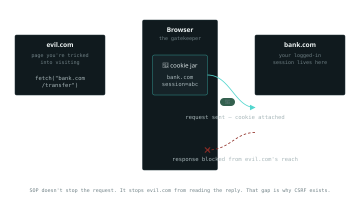

24 October 2023 · web
The browser's security model in plain words
SOP, CORS, SameSite, Secure, HttpOnly. Five things everyone working in web security are supposed to know, and when searched in google or some article tell you in such a way that you get confused instead of learning about these concepts. They confused me for a long time too, until I realised they're not one family and they're two, answering two different questions. Once you split them that way, each one becomes simple. Here I wrote them in simple language, how I understood and with how I actually test each in a browser.
Two questions, not one topic
Everything here is our browser agent acting as a gatekeeper between websites. The two questions it's answering are:
Group 1 : SOP, CORS, SameSite: when one site (SiteA) talks to another (SiteB), whose cookies go along, and who's allowed to read the reply?
Group 2 : Secure, HttpOnly: how is one individual cookie protected?
Keep that split in your head and the whole thing stops being a blur. Let's do the first group, because it's where the interesting attacks live.
First, two words: origin and the cookie jar
An origin is the combination of scheme + host + port.
https://bank.com is one origin, http://bank.com
(different scheme) is another, and https://shop.bank.com
(different host) is another again. "Same origin" means all three match. This
matters because the browser's whole security model is drawn along origin
lines.
The cookie jar is exactly what it sounds like: the browser
keeps a jar of cookies, filed by which site they belong to. When your browser
sends a request to bank.com, it automatically reaches into the
jar, pulls out bank.com's cookies, including your login session,
and attaches them. You don't do anything; the browser just does it. Hold onto
that, because it's the root of the most important idea below.
Same-Origin Policy, the surprising part
Everyone "knows" SOP stops one site from talking to another. That's not quite what it does, and the difference is the whole point.

So a page on evil.com tells your browser to send a request to
bank.com. Does SOP block it? No, the request goes out, and
because the browser fills cookies from the jar by destination, your bank
session cookie rides along with it and goes out from your browser. What SOP
blocks is the reading: evil.com's JavaScript is not allowed to
see the response that comes back.
SOP doesn't stop the request from being sent. It stops the attacker's page from reading the reply. That one way gap is exactly why CSRF exists.
CSRF works precisely because the request lands and the cookie goes with it, a state-changing action (transfer money, change email) can succeed even though the attacker never sees the response. They didn't need to see it; they needed it to happen. (CSRF is its own topic; I'll leave it there for now.)
How to see it yourself: open your browser's DevTools, Network
tab, on any site you're logged into. Watch a request go out and look at the
request headers, the Cookie header is right there, attached by
the browser. Now notice that a cross-site fetch() to another
origin still sends, but its response is unreadable to the calling page. That's
SOP in one observation.
Common misunderstanding: "SOP stops evil.com from reaching bank.com." It doesn't. The request reaches bank.com with your cookie; SOP only stops evil.com from reading what comes back.
CORS, the server choosing to relax SOP
Here's the misconception worth killing: people think CORS is a defence that
blocks things. It's the opposite. CORS is how a server opts out of SOP's read
blocking, deliberately, for origins it trusts. By default the browser blocks
cross-origin reads; CORS is the server saying "actually,
app.mysite.com is allowed to read my responses."
It does that with a response header:
Access-Control-Allow-Origin: https://app.mysite.com
What to test: the classic bug is a server that reflects
whatever origin you send back into that header, effectively trusting everyone.
Send a request with a made-up Origin and look at the response:
Request: Origin: https://evil.com
Response: Access-Control-Allow-Origin: https://evil.com
Access-Control-Allow-Credentials: true
If the server echoes your evil origin back and allows credentials, an
attacker's page can now read authenticated responses, the read block SOP gave
you is gone. Two things I check: whether the origin is reflected rather than
matched against a real allowlist, and whether Allow-Credentials: true
is paired with a loose origin (the spec forbids it with a wildcard, so people
work around it by reflecting, which is the bug). Burp's Repeater is all you
need, change the Origin header, resend, read the response headers.
Common misunderstanding: "CORS protects my API." CORS doesn't restrict who can send a request; it only controls who's allowed to read the reply. A permissive CORS config makes things less safe, not more.
SameSite, deciding if the cookie even shows up
SameSite is a cookie setting that steps in one layer earlier than the others: it decides whether the browser attaches the cookie at all on a cross-site request. It's the most direct answer to the CSRF problem above, because if the session cookie doesn't ride along, the cross-site request arrives logged-out and harmless.
If there are two sites (SiteA and SiteB), and the user clicks a link in SiteA
such as http://SiteB.com/page, then the browser doesn't attach
SiteB's cookie when the request started at SiteA's origin, because the two
origins are completely different.
Three values, in plain terms: Strict, never send the cookie
on any cross-site request, even when the user clicks a normal link to the site
(safe, occasionally annoying). Lax, send it only on top-level
navigations the user actually initiated, like clicking a link, but not on
background requests like a hidden form POST or an image (a sensible default,
and now the browser default). None, always send it cross-site,
the old behaviour, and it now requires the Secure flag.
What to test: in DevTools, Application tab (Chrome) or Storage
(Firefox), open Cookies and read the SameSite column for the session cookie. If
it's None, or blank on an older stack that defaults to none, then
cross-site requests carry the session, and CSRF is back on the table unless
something else stops it. Also worth knowing: Lax-by-default narrowed CSRF but
didn't kill it. A state change reachable by a top-level GET still
goes through, because that's a user-initiated navigation Lax allows.
Common misunderstanding: "SameSite=Lax stops CSRF completely." It doesn't. A state change reachable by a top-level GET still slips through, because Lax allows user-initiated navigations.
Now the second group: Secure and HttpOnly
These two are smaller and simpler, and, this is the bit that removes the confusion, they're not about origins at all. As mentioned at the start they protect a single cookie in two different ways.
Secure means the cookie is only sent over HTTPS. Set it, and
the browser refuses to attach the cookie to a plain http://
request, so it can't leak over an unencrypted connection someone's sniffing.
It's about the transport.
Common misunderstanding I had myself: "if the site is HTTPS, why do I even
need the Secure flag?" Even on an HTTPS site, if a user types
http://example.com or clicks an old link, the first request can
start on plain HTTP before redirecting. Without the Secure flag the browser
will happily attach and send existing session cookies in clear text on that
first unencrypted hop.
HttpOnly means JavaScript can't read the cookie.
document.cookie simply won't return it. This is the one that stops
cookie theft via XSS, if an attacker gets script running on your page but the
session cookie is HttpOnly, they can't read it out and exfiltrate it. It's
about script access.
What to test: same Cookies panel in DevTools, there are literal
Secure and HttpOnly columns, each a checkbox. For any
session or auth cookie, both should be ticked. Then try the HttpOnly one
directly: open the console and type document.cookie. An HttpOnly
cookie won't appear in the output, even though it's clearly in the request
headers. Seeing a session cookie show up in document.cookie is an
immediate finding.
And CSP, which sits somewhere else entirely
One more you'll meet in the browser security terminology, so it's worth placing: Content-Security-Policy. It's not about origins or cookies, it answers a third question: what is this page allowed to load and run? It's a header that whitelists where scripts, styles, and images may come from, and it's primarily an XSS mitigation. Different question, different layer, which is exactly why grouping it in with the other five is what makes people's heads spin. I'll give it its own note another time.
The one-line map
If you remember nothing else: SOP blocks reading the reply (not sending the request). CORS is the server relaxing SOP. SameSite decides if the cookie is even attached. Secure keeps a cookie only on HTTPS. HttpOnly keeps the cookie away from JavaScript. And CSP controls what the page can load. Six answers, and now they don't blur together.